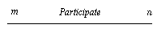
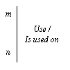

To compare the performance of the algorithms, each of them must run the same set of tests (Test specification suite) under the same hardware, software configuration and tuning, and software gauges.
It is also required to run a nested loop algorithm on each test of a Test suite specification and to record (save, register, store) the obtained marks. These marks will be used as references to evaluate the gains achieved by each algorithm against a standard (universal) nested loop approach.
| Test Implementation suite | = | (Test specification suite, System configuration, Database reference, Algorithm implementation, Static parameters ) |
| where | ||
| System configuration | is | (Platform reference, Database reference, Configuration number, Configuration parameters) |
| Algorithm implementation | is | (Algorithm name, Access method implementation, Database reference, Algorithm code, Algorithm author, Algorithm version) |
| Access method implementation | is | (Access method name, Database reference, Access method code, Access method author, Access method version) |
| Test Implementation |  | Algorithm Implementation | |||
|  | System Configuration | Access Method Implementation | |||